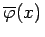
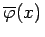

Inhalt Index DeskTop Bronstein

 Lineare Integralgleichungen Fredholmsche Integralgleichungen 2. Art Fredholmsche Lösungsmethode, Fredholmsche Sätze Fredholmsche Lösungsmethode
Lineare Integralgleichungen Fredholmsche Integralgleichungen 2. Art Fredholmsche Lösungsmethode, Fredholmsche Sätze Fredholmsche Lösungsmethode


Eine FREDHOLMsche Integralgleichung 2. Art
kann näherungsweise in Form eines linearen Gleichungssystems dargestellt werden. Es sei vorausgesetzt, daß die Funktionen K(x,y) und f(x) für stetig sind.
Das Integral in (11.15) soll durch die linksseitige Rechteckformel angenähert werden. Man könnte aber auch eine beliebige andere Quadraturformel anwenden. Mit den äquidistanten Punkten
erhält man die Näherung
Man ersetzt in dieser Beziehung  durch eine Funktion , die (11.16b) exakt erfüllt:
durch eine Funktion , die (11.16b) exakt erfüllt:
Zur Auswertung dieser Näherungslösung benötigt man die Funktionswerte der Funktion  in den Stützstellen . Setzt man in (11.16c) nacheinander , so erhält man ein lineares Gleichungssystem für die n gesuchten Funktionswerte
in den Stützstellen . Setzt man in (11.16c) nacheinander , so erhält man ein lineares Gleichungssystem für die n gesuchten Funktionswerte  . Mit den Abkürzungen
. Mit den Abkürzungen
lautet dieses Gleichungssystem
Das System besitzt die Koeffizientendeterminante
Diese Determinante hat dieselbe Struktur wie die Koeffizientendeterminante, die bei der Behandlung von Integralgleichungen mit ausgearteten Kernen auftritt. Das Gleichungssystem (11.17b) besitzt eine eindeutige Lösung für alle  mit
mit  . Diese Lösung besteht aus Näherungen für die Funktionswerte der gesuchten Funktion in den Stützstellen. Die Zahlen
. Diese Lösung besteht aus Näherungen für die Funktionswerte der gesuchten Funktion in den Stützstellen. Die Zahlen  mit sind Näherungen für die Eigenwerte der Integralgleichung. Die Lösung von (11.17b) läßt sich gemäß der CRAMERschen Regel als Quotient darstellen:
mit sind Näherungen für die Eigenwerte der Integralgleichung. Die Lösung von (11.17b) läßt sich gemäß der CRAMERschen Regel als Quotient darstellen:
Dabei entsteht aus , indem die k-te Spalte durch ersetzt wird.